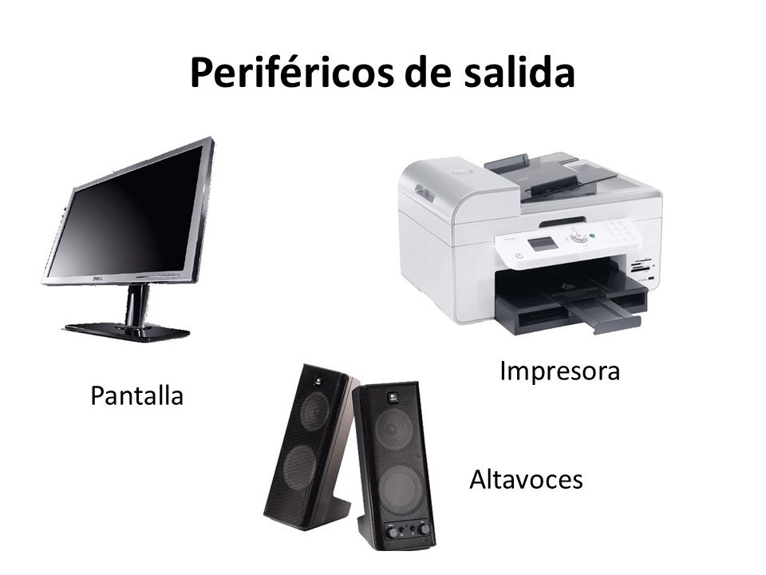
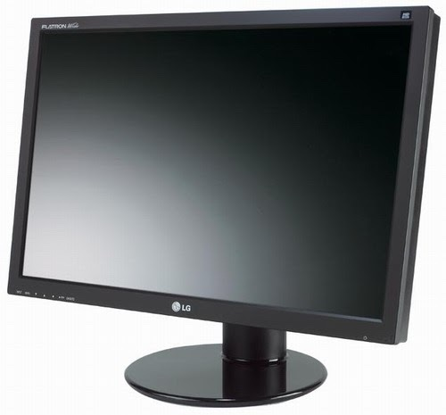

Son componentes que se conectan a diferentes puertos de la computadora, pero que permanecen externos a ella. Son de "salida" porque el flujo principal de datos va desde la computadora hacia el periférico.

Los más importantes son los siguientes:
Monitor: Periférico de salida que muestra la información de forma gráfica de una computadora. Los monitores se conectan a la computadora a través de una tarjeta gráfica o tarjeta de vídeo.
Un monitor puede clasificarse, según la tecnología empleada para formar las imágenes en: LCD, CRT, plasma o TFT.
La calidad de un monitor se mide por su resolución, que se mide en píxeles por pulgada.

|
Impresora: Periférico externo que sirve para imprimir en un medio (generalmente papel) textos e imágenes. Dependiendo de la forma o tipo de impresión que utilizan, pueden clasificarse en: matriz de puntos, chorro de tinta, láser, etc. Las impresoras suelen medir su calidad de impresión por la resolución que alcanzan, la cual es medida en PPP (puntos por pulgada). La velocidad de las impresoras suele medirse PPM (Páginas por minuto). Las impresoras pueden conectarse al puerto paralelo o al puerto USB (Más usado actualmente). |
|
|
Altavoces: Dispositivo utilizado para reproducir sonido desde un dispositivo electrónico. Los altavoces convierten las ondas eléctricas en energía mecánica y esta se convierte en energía acústica. |